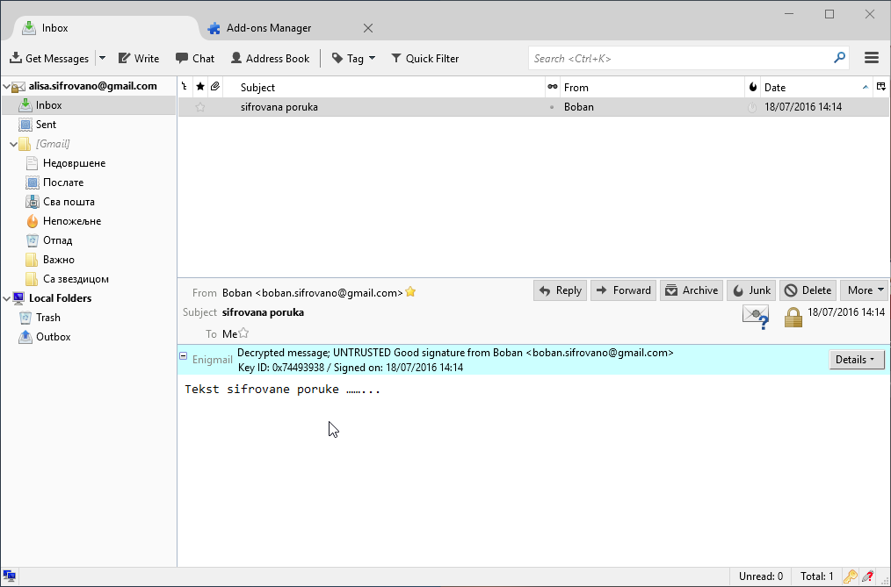

1. Kratak uvod
Ovo uputstvo će vam pokazati kako da šifrujete elektronsku poštu na opera- tivnom sistemu Windows koristeći Thunderbird klijenta elektronske pošte tj. imejl klijenta.
2. Instalacija Gpg4win programa
Od softvera su nam potrebni Gpg4win program koji barata sa procesom šifrovanja, dešifrovanja, digitalnog potpisivanja i provere digitalnog potpisa.Gpg4win možete preuzeti klikom na ovaj link
Figure 1: Preuzmite Gpg4Win sa interneta
Figure 2: Preuzmite Gpg4Win sa interneta
Vazno je i proveriti otisak i digitalni potpis preuzetog programa.
Figure 3: Odaberite Gpg4win Light verziju
Figure 4: sačekajte da se program preuzme
Figure 5: po reuzimanju pokrenite Gpg4win program
Sada samo prođite kroz jednostava i uobičajen proces intalacije Gpg4win programa, koja se svodi na kliktanje Next dugmeta. Instalacija je jednos- tavna, ali ćemo svakako proći kroz ceo proces.
Figure 6: odaberite jezik za Gpg4win program, mi biramo Engleski
Figure 7: Next
Gpg4win je slobodan softver otvorenog koda pod GNU GPL licencom, tako da svako može videti kôd samog softvera, uveriti se u ispravnost ili proučavati način funkcionisanja istog.
Figure 8: Next
Figure 9: Next
Figure 10: Next
Figure 11: Next
Figure 12: Install
Figure 13: Next
Figure 14: Finish. Intslacija se završila
Figure 15: Videćete ikonice na vašem Desktop-u
3. Instalacija Thunderbird programa
Sledeći program koji nam je potreban je Thunderbird klijent elektronske pošte koga možete preuzeti sa mozilla.org/en-US/thunderbird. Zato preporučujemo Thunderbird klijenta elektronske pošte koji je otvorenog koda, multiplatformski, podržava šifovanje elektronske pošte kroz Enigmail dodatak.
Figure 16: Preuzmite Thunderbird
Figure 17: Sačekajte da se završi preuzimanje
Figure 18: Pokrenite preuzeti instalacioni fajl Thunderbird-a
Figure 19: Instalirajte Thunderbird
Figure 20: Instalirajte Thunderbird
Figure 21: Instalirajte Thunderbird
Figure 22: Pokrenite Thunderbird po završetku instalacije
Figure 23: Prvo pokretanje Thunderbird-a
Figure 24: Odaberite da želite da podesite vaš postojeći nalog elektronske pošte
Figure 25: Pdesite opcije za vaš nalog. Naš je u ovom primeru: alisa.sifrovano@gmail.com, a vi unesite vašu email adresu i sifru.
Figure 26: Razlika između IMAP i POP3 protokola je što se kod ovog drugog pošta čuva na vašem računaru, pa u nekim slučajevima, Email provajder neće čuvati kopiju vaše pošte.
3.1 instalacija Enigmail dodatka
Figure 27: Izaberimo opciju "Add-ons" iz Thunderbird-a kako bi smo instalirali Enigmail
Sada je i Thunderbird mejl klijent instaliran, podešena željena adresa, pa prelazimo na instalaciju Enigmail dodatka (eng. Add-ons) mejl klijentu koji će nam omogućiti šifrovanje/dešifrovanje, digitalno potpisivanje i provere digitalnih potpisa iz samog mejl klijenta. Enigmail pruža pomenute funkcionalnost kroz koristeći predhodno instaliran Gpg4win, tako da ne morate da pokrećete Gpg4Win (GPA ikonica na desktop-u), nego pomenute operacije izvodite direktno iz Thunderbird-a. Enigmail je dobro integrisan u Thunderbird tako da može da upamti vašu šifru za privatni ključ, automatksi dešifruje nove poruke po prispeću, proverava digitalni potpis i vizuelno signalizira ispravnost istih različitim bojama.
Figure 28: Tražimo Enigmail dodatak
Figure 29: Posle instaliranja Enigmail-a restartujemo Thunderbird
3.2 Generisanje GPG ključeva
Figure 30: Sada trebamo da generišemo GPG ključece u Enigmail-u
Figure 31: Pokrenite Wizard izaberite standardni način konfigurisanja .
Figure 32: Wizard će prepoznati predhodno podešen mejl nalog. Vi samo treba da podesite šifru za vaše nove GPG ključeve koji će Wizard generisati za vas.
Figure 33: Sačekajte da Wizard generiše nove GPG ključeve za vas.
Figure 34: Kada se generisanje ključeva završi, ponudiće vam da generišete Sertifikat za opoziv ključeva (eng. Revocation certificate), obavezno to i uči- nite
Figure 35: Naravno, morate uneti i šifru za GPG ključ koju ste malopre podesili
Figure 36: Sačuvajte sertifikat za opoziv ključeva.
Figure 37: Napravite bekap kopiju na neki USB jer ovaj sertifikat treba da čuvate u tajnosti. Ovaj sertifikat će vam omogućiti da opozovete vaše ključeve, ukoliko ih izgubite.
Figure 38: Nstavite sa procesom.
Figure 39: Završite sa procesom generisanja ključeva.
4. Slanje javnog ključa na server javnih ključeva
Figure 40: Sada je potrebno da pošaljemo naš javni ključ na server javnih ključeva kako bi ostali mogli da lako pronađu naš javni ključ i njime šifruju poruku za nas.
Figure 41: Slanje ključeva naravno obavljamo iz Enigmail-a
5. Razmena šifrovanih poruka
5.1 Nabavka javnog ključa sagovornika
Figure 42: Da bi smo poslali šifrovanu poruku nekome moramo imati javni ključ te osobe, tj. i ta osoba mora koristiti GPG
Figure 43: Traženje javnog ključa osobe kojoj želimo poslati šifrovanu poruku.
Figure 44: Ključ tražimo po mejl adresi
Figure 45: I ako je druga osoba napravila svoj ključ i poslala ga na server, kao što smo to i mi uradili, ključ će biti pronađen
Figure 46: Biće jedinstvani prikazan i otisak ključ (eng. Fingerprint)
Figure 47: I ključ će biti u vašoj bazi ključeva. Ceo ovaj proces nabavke ključa je potrebno uraditi samo jednom za svaku osobu sa kojom želite da razmenjujete šifrovane poruke.
5.2 Slanje šifrovane poruke
Figure 48: Sastavimo novu šifrovanu poruku za Bobana (boban.sifrovano@gmail.com) Mala napomena da GPG šifruje samo "telo" poruke, ne i naslov!
Figure 49: Kada razmenjujemo šifrovane poruke, sve šte naš mejl provajder vidi je šifrovana poruka, naslov poruke, i kome je poruka upućena.
5.3 Dešifrovanje primljenje šifrovane pošte
Figure 50: Kada dobijete šifrovanu poruku, Enigmail će vam tražiti GPG žifru da bi ste dešifrovali mejl.

Figure 51: Po unošenju šifre, videćete originalni tekst dešifrovane poruke.
6. Dodatak
6.1 Windows Live Mail
Iako na Windows-u već postoji Windows Live Mail on ne podržava šifrovanje elektronske pošte niti postoje dodaci (eng. plugins) koji bi tu funkcionalnost omogućili u Windows Live Mail-u. Takođe, Windows Live Mail je vlasnički softver zatvorenog koda, pa ne bi trebalo da imate poverenja u njega i iz tog razloga. Međutim, ako se iz nekog razloga želite ostati pri Windows Live Mail-u, a u isto vreme želite razmenjivati šifrovane poruke, to možete učiniti kombinovanjem predhodno instaliranog Gpg4Win tj. GPA pro- grama. Naime, GPA ima Clipboard prozor u kome možete uneti tekst koji potom pritiskom na dugme Encrypt šifrujete poruku, pritiskom na dugme Sign digitalno potpisujete poruku. Kada poruku šifrujete u GPA programu onda je samo prekopirate u Windows Live Mail u prozoru gde bi ste inače sastavljali poruku, i zatim samo pošaljete.
Figure 52: Pokrenite GPA
Figure 53: Otvoriće vam se Clipboard u kome možete sastaviti poruku, a potom pritisnite Encrypt dugme.
Figure 54: Zati će se otvoriti prozor u kome treba da odaberete ključ tj. mejl primaoca za koga šifrujete poruku. Ovo podrazumeva da ste predhodno uvezli primaočev javni ključ.
Figure 55: Proverite i potvrdite akciju šifrovanja.
Figure 56: Tekst poruke će se zatim šifrovati, a vi ga šifrovanog trebate prekopirati u Windows Live Mail u polje za sastavljanje nove poruke
Figure 57: Kada prekopirate šifrovani tekst u Windows Live Mail unesite primaoca (onog istog za koga ste šifrovali poruku), i pošaljite je.